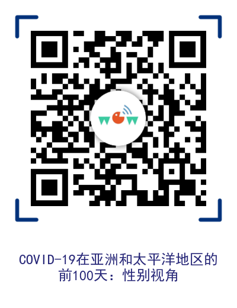

COVID-19在亚洲和太平洋地区的前100天：性别视角

该文件重点介绍了迄今为止我们对亚太地区COVID-19性别差异影响的了解。自报告第一例病例以来一百天，我们密切关注并为该地区各国政府发起并得到了国际社会支持的卫生应对做出的贡献。虽然目前尚不清楚这种流行病的所有影响，而且情况正在迅速发展，但显然，流行前社会基础上的性别和社会不平等现象正在加剧，使妇女和女童的处境更加恶化。应对和恢复工作必须把妇女和女童的需求放在中心，并以她们所面对的社会经济现实为基础。
在向世界卫生组织（WHO）报告第一例病例后100天，该文件提供了对COVID-19大流行的性别影响的快速初步评估。
联合国亚洲及太平洋妇女署通过政策倡导和规划，纳入了促进性别平等的复原方法，支持合作伙伴推动满足妇女和女童迫切需求的对策，同时维护和利用在性别平等和增强妇女权能方面取得的成就。
I. 介绍
背景
目标
联合国妇女署在COVID-19的准备和响应中的作用与参与
II. 前100天：将性别视角应用于COVID-19大流行的紧急情况
紧急情况下的迫切需求
作为主要女性劳动力的卫生
保健工作者的需求
性别暴力
对无偿护理工作的影响
性与生殖健康和权利
受教育机会中断
信息获取不平等
对妇女运动和公民社会的影响
边缘化和服务不足的群体
难民和其他被迫流离失所的人
联合国妇女行动：罗兴亚妇女领袖动员社会提高对 COVID-19的认识
残疾妇女
具有不同性取向，性别认同、表达方式和性特征的
感染艾滋病的妇女
性别在迄今为止响应中的地位
性别，年龄，残疾分类数据的可用性
国家针对COVID-19的准备和响应计划
III. COVID-19：接下来的100天
妇女，和平与安全
证券化环境的风险
受冲突影响和冲突后的社区风险
COVID-19引发冲突和社会摩擦的风险
性别平等与降低灾害风险
消除对妇女的暴力行为
妇女的经济权能
对私营部门中妇女的影响
对中小企业的影响
联合国妇女行动：与印度的女企业家互动，寻求解决方案
妇女市场摊贩和农民
迁徙女工
IV. 结论

扫描二维码或点击阅读全文，获得文件全文